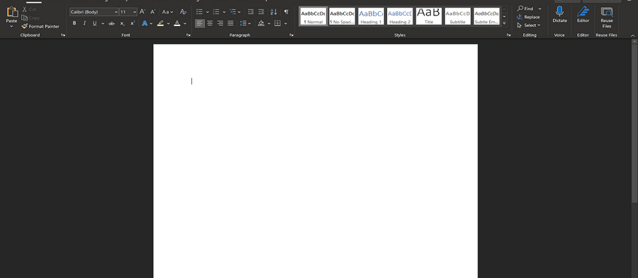
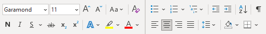
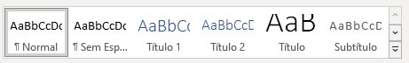

Microsoft Word
Com alguns recursos a mais, o Word possui as mesmas características do Wordpad na hora de formatar caracteres e parágrafos. Neste módulo abordaremos apenas os conceitos básicos de formatação de texto para compreender os recursos fundamentais do Word. Para um entendimento mais a fundo de tipografia sugiro que faça o Curso Completo de Design Gráfico em:
www.jorgesouza.com.br Todos os aplicativos do Office possuem um layout básico que é composto pelo espaço de trabalho no centro da tela, que pode ser a página, a planilha ou o slide em que estamos trabalhando. Acima do espaço de trabalho temos a Barra de Menus e a Faixa de Opções, com as opções desses menus. Abaixo do espaço de trabalho temos a Barra de Status e ocasionalmente guias e/ou barra de rolagem acima da Barra de Status. Na Barra de Status temos o controle deslizante do zoom, mas é possível controlar o zoom utilizando o Control e a scroll do mouse.
Famílias de Fontes
O Windows vem com uma boa quantidade de famílias de fontes pré-instaladas. Uma família de fonte é um estilo de fonte como Arial que contém variações como itálico, negrito etc.
Este texto está na fonte Arial
Este texto está na fonte Garamond
Este texto está na fonte Times New Roman
Este texto está na fonte Times New Roman em Negrito
Tamanho da Fonte
O tamanho da fonte é medido em pontos. Em um único texto, tamanhos maiores podem ser utilizados no título e menores no corpo, o tamanho do texto pode ainda variar de acordo com o local onde aparecerá.
Este texto tem tamanho 10
Este texto tem tamanho 12
Este texto tem tamanho 14
Este texto tem tamanho 16
Estilos de Caractere
Os estilos de caractere incluem negrito, itálico, sublinhado, tachado, subscrito e sobrescrito:
Este é um texto normal
Este é um texto negrito
Este texto está em itálico
Este texto está sublinhado
Este texto está em itálico e negrito
Este texto está tachado
O 2 de H2O é um exemplo de texto subscrito.
O 2 de 8m² é um exemplo de texto sobrescrito.
Este é um exemplo de Título em Versalete
Estilos de Parágrafo
Os estilos de parágrafo incluem listas ordenadas e não ordenadas, espaçamentos e tabulações, alinhamento, bordas etc.:
Este é um
exemplo de parágrafo
alinhado à esquerda.
Este é um
exemplo de parágrafo
centralizado.
Este é um
exemplo de parágrafo
alinhado à direita.
• Esta é
• uma lista
• não ordenada
1. Esta é
2. uma lista
3. ordenada
O ícone de pincel na barra da área de transferência (Pincel de Formatação) serve para copiar o estilo de formatação de um texto para outro. Está presente em praticamente todos os aplicativos do Office. É possível também copiar o estilo de formatação com o atalho Ctrl+Shift+C e colar em outro texto com o atalho Ctrl+Shift+V.

Para nosso primeiro exercício, digite o texto abaixo. Em seguida formataremos, desta vez incluindo tabulações e estilos. Assim que abrir o Word em seu PC ou o Word on-line em Office.com e iniciar um novo arquivo, salve o arquivo com o nome Inteligência Artificial em sua pasta em Documentos ou em sua pasta no Drive. Para usar o Office on-line é preciso estar logado em sua conta Microsoft.
O que é inteligência Artificial
Inteligência artificial é a capacidade de dispositivos eletrônicos de funcionar de maneira que lembra o pensamento humano.
Isso implica perceber variáveis, tomar decisões e resolver problemas. Enfim, operar em uma lógica que remete ao raciocínio.
“Artificial”, segundo o dicionário Michaelis, é algo que foi “produzido por arte ou indústria do homem e não por causas naturais”.
Já “Inteligência” é a “faculdade de entender, pensar, raciocinar e interpretar”. Ou o “conjunto de funções mentais que facilitam o entendimento das coisas e dos fatos”.
No mesmo dicionário, há duas definições da Psicologia para a palavra “inteligência”:
• Habilidade de aproveitar a eficácia de uma situação e utilizá-la na prática de outra atividade
• Capacidade de resolver situações novas com rapidez e êxito, adaptando-se a elas por meio do conhecimento adquirido.
Mesmo essas duas últimas definições fazem sentido quando falamos em inteligência artificial, com a vertente chamada de machine learning (aprendizado de máquina).
Enfim, a inteligência artificial é desenvolvida para que os dispositivos criados pelo homem possam desempenhar determinadas funções sem a interferência humana.
E quais são essas funções? A cada dia que passa, a resposta a essa pergunta é maior.
Tentaremos responder mais adiante, dando exemplos de aplicações da inteligência artificial.
Após terminar de digitar todo o texto inicie a formatação. Abaixo temos as duas barras de formatação, de caractere e de parágrafo, na dúvida é possível parar o mouse sobre um ícone e esperar que seu nome apareça no cursor:
Fonte
Antes de tudo, selecione todo o texto e aplique uma fonte Garamond, tamanho 11.
Estilos de Caractere e de Parágrafo
Selecione as partes que aplicará o estilo negrito clicando e arrastando, faça o mesmo para os trechos em itálico e o mesmo para aplicar o alinhamento, que no caso do corpo do texto é justificado, e o rodapé com a fonte é alinhado à direita.
Tabulação
Note que cada parágrafo se inicia com um espaço na primeira linha chamado de tabulação, para inseri-lo basta posicionar o mouse antes da primeira letra e apertar a tecla TAB.
Lista com marcadores
Note ainda que no meio do texto temos dois parágrafos em lista não ordenada, para formatá-los, selecione-os e clique em Marcadores, a primeira opção da Barra de Estilo de Parágrafo.
Títulos
Por último, selecione o título, e na Barra de Estilos, selecione Titulo 1.
Em seguida altere a fonte para Garamond 14 negrito.
Pareceu estranho aplicar um estilo em seguida alterá-lo? O que fizemos antes é apenas semântico, pois aplicamos um nível hierárquico ao título de forma que depois poderemos construir um sumário. Por exemplo, o Título 2 se torna o subtítulo do Título 1, isso define a posição que aparecerão no sumário quando o inserirmos.
Quebra de Página
Para prosseguir com nosso exercício iremos escrever mais duas partes para o nosso artigo, cada parte estará em uma página diferente, e para isso precisamos adicionar uma quebra de página.
Uma quebra de página é inserida ao segurarmos a tecla Control e pressionarmos Enter, isso faz com que o próximo parágrafo se inicie na página seguinte. É possível ainda inserir uma quebra de página pelo menu Inserir. Agora digite o texto abaixo:
Como funciona a Inteligência Artificial?
Você já deve ter ouvido falar muitas vezes em hardware e software, certo? Mas você sabe o que esses termos significam?
Enquanto o hardware é a parte física de uma máquina, o software é a parte lógica – ou o “cérebro”. Onde você diria, portanto, que está a inteligência artificial? No software, é claro.
Por isso, se você quiser saber como um carro pode andar sozinho, por exemplo, esqueça o hardware, pois o segredo está no programa que orienta seus movimentos.
Portanto, não é possível explicar como funciona a inteligência artificial sem falar na ciência da computação.
Essa ciência estuda técnicas e métodos de processamento de dados, sendo o desenvolvimento de algoritmos uma questão central nela.
Os algoritmos são uma sequência de instruções que orientam o funcionamento de um software – que, por sua vez, pode resultar em movimentos de um hardware.
E a inteligência artificial, onde entra nisso? Na sua origem, o algoritmo é muito simples, como em uma receita de bolo.
Hoje, a lógica dos algoritmos é usada para criar regras extremamente complexas, para que possam resolver problemas sozinhos.
Mesmo quando há dois ou mais caminhos a seguir em uma tarefa. Para isso, é necessário combinar algoritmos com dados.
Voltando ao exemplo do bolo, uma pessoa o retira do forno quando observa que ele está pronto ou fazendo o teste do garfo.
Uma máquina de fazer bolos com inteligência artificial poderia ter algum tipo de sensor que identificasse a textura do bolo.
O algoritmo trabalharia com duas hipóteses e uma resposta para cada uma:
1. Se a textura ainda não for a ideal, o bolo segue no forno.
2. Quando o bolo estiver pronto, é retirado e o forno desligado.
Claro que esse é um exemplo muito primário diante das possibilidades.
Há máquinas que realizam tarefas muitas vezes mais complexas, resolvendo problemas com milhares de variáveis, em vez de apenas uma.
Mas elas vão sempre funcionar dessa maneira: a partir de uma programação prévia, um código que considera essas variáveis, processa os dados e determina o que fazer em cada situação.
Qual é o principal objetivo da Inteligência Artificial?
Entre os inúmeros objetivos da inteligência artificial, o principal é desenvolver tecnologias que tenham a capacidade de simular as ações humanas e de pensar de maneira lógica.
E com isso, criar soluções para os mais variados aspectos da nossa vida.
A modernização das empresas é um dos resultados práticos mais evidentes do uso destas tecnologias.
Fonte: FIA – Fundação Instituto de Administração
Após terminar de digitar todo o texto, formate-o conforme ele foi apresentado.
Lista Numerada
Note que no meio do texto temos outro tipo de lista, uma lista ordenada com numeração, ou, uma lista numerada. Para isso basta selecionar Numeração em vez de Marcadores como fizemos no exercício anterior.
Estilo de Título
Podemos deixar a formatação dos títulos ainda mais fácil. Clique no título do primeiro texto que você fez anteriormente (o que já estava formatado) e clique com o botão direito do mouse sobre o estilo Título 1 (que você aplicou ao texto) na Barra de Estilos do menu Página Inicial. Selecione a opção Atualizar Título 1 para corresponder à seleção, você verá que ele se modificará, isso porque apesar de manter a hierarquia semântica do sumário, ele contém agora a formatação que desejamos. Agora basta aplicá-lo aos nossos títulos.
Inserir Imagens
Para inserir a imagem, entre no site pixabay.com e digite Inteligência Artificial, escolha duas imagens que gostar e faça o download. Em seguida crie uma nova linha no texto entre os títulos e os parágrafos para inserir a imagem e, com o cursor posicionado no local, clique no menu Inserir na Barra de Menus, clique em Imagens e selecione Este Dispositivo procure pela imagem e clique em Inserir.
Formatar imagens inseridas
Faça o mesmo processo com a segunda imagem.
Para definir as duas imagens com o mesmo tamanho, clique com o botão direito do mouse sobre a imagem e selecione Tamanho e Posição e defina a largura como 10,0cm, faça o mesmo com as duas imagens.
Sumário
Nosso próximo passo é criar um sumário com os conteúdos dos títulos. Para isso clique antes da primeira letra no início do arquivo, clique no menu Inserir e selecione Página em Branco. Com o cursor posicionado no começo da página, clique no menu Referências, clique em Sumário e selecione um dos dois tipos de sumário automático. Sempre que alterarmos ou excluirmos títulos ou inserirmos novos, devemos voltar a esse menu e selecionar Atualizar Sumário.
Caso o sumário não tenha adicionado automaticamente os títulos, ainda no menu Referências você pode selecionar os títulos e clicar em Adicionar Texto, e definir o nível hierárquico que aparecerá no sumário, pode ser necessário formatar novamente os títulos.
Cabeçalho e Rodapé
Outro recurso que vamos inserir em nosso documento é Cabeçalho e Rodapé. Para isso, clique no menu Inserir e procure por Cabeçalho e clique, selecione Em branco. No cabeçalho do documento, digite: Inteligência Artificial, o que é, como funciona e objetivos. Formate o cabeçalho como Garamond 10 negrito centralizado.
Para inserir o Rodapé o processo é o mesmo, selecione Rodapé, Em Branco. A diferença é que ao invés de digitarmos algo, inseriremos um elemento automático.
Na Faixa de Opções procure por “Número de Página” e clique, selecione “Fim da página” e escolha “Numero sem formatação 2”, para que fique centralizado, em seguida selecione o número de página e formate-o como Garamond 14 negrito.
Espaçamentos
Vamos agora configurar os espaçamentos entre linhas e parágrafos, provavelmente seu texto esteja com os espaçamentos maiores que os da apostila.
Selecione todo o texto do primeiro parágrafo. Você pode clicar e arrastar ou pressionar Control+T.
Na Barra de Estilo de Parágrafo, clique na setinha que aponta para baixo, bem no canto, será aberta a caixa de diálogo Recuos e Espaçamento. Na primeira guia ela tem três conjuntos, Geral, Recuo e Espaçamento, o que nos interessa é o terceiro conjunto, espaçamentos.
Em “Antes”, digite 0, em “Depois” digite 0, e em “Espaçamento entre linhas”, selecione Simples.
Certamente os títulos encostaram nos parágrafos. Basta que você selecione um dos títulos do documento e formate-o novamente, em “Espaçamento entre Linha e Parágrafo”, na Barra de Estilo de Parágrafo, selecione 1,5. Em seguida atualize o estilo de título na Barra de Estilos. Se tiver dúvidas nesta etapa, peça ajuda ao seu instrutor.
Bordas e Sombreamento
Está quase pronto, vamos agora configurar uma cor de fundo para os parágrafos aplicando um estilo de Bordas e Sombreamento.
Selecione todo o texto do documento.
Na Barra de Estilo de Parágrafo, procure por Bordas e clique na seta ao lado, selecione Bordas e Sombreamento, lá no final.
Na caixa que se abrirá, clique na terceira guia, Sombreamento, em Preenchimento, escolha uma cor clara de sua preferência. Veja que se quiser você pode aplicar uma Borda de Página também, sinta-se à vontade.
Terminando tudo, clique em Ok. Salve seu documento.
Layout de Página
Vamos agora a uma das etapas fundamentais que é configurar a página, pois não adianta nada fazer um belo documento que no final não é funcional para imprimir ou exportar.
Clique no menu Layout.
Em Margens, selecione Moderada, o que aplica recuos laterais de 1,91cm e superior e inferior de 2,54cm. Você pode configurar margens independentes de acordo com o tipo de impressão que fará com o documento.
A orientação será mantida como Retrato, o que significa que a o conteúdo é impresso com a página “em pé”.
Em tamanho selecione A5, que equivale à metade de uma folha de papel comum, o tamanho A5 é muito usado em livros.
Revisão Ortográfica
Quando terminamos um documento podemos passar um Corretor Ortográfico para verificar erros de digitação e de concordância, geralmente o Word aponta erros de digitação com marcas vermelhas e de concordância com marcas azuis, enquanto digitamos. Mas é possível depois de tudo pronto dar um tratamento geral nos erros do arquivo.
Clique no menu Revisão. Selecione Ortografia e Gramática. Podemos corrigir ou ignorar uma sugestão do corretor.
Salvar e Salvar como
Para salvar um arquivo basta pressionar Alt+1. Caso o arquivo esteja salvo previamente será atualizado, senão será solicitado para salvar em um diretório no computador. Para salvar o documento como um novo, selecionamos “Salvar Como”. Na caixa de diálogo de Salvar Como, você pode ver que podemos salvar o arquivo em vários formatos diferentes, como por exemplo .rtf, que é o formato Rich Text, utilizado pelo Wordpad e .txt que é texto sem formatação, utilizado pelo Bloco de Notas.
É claro que salvar em formatos não compatíveis pode resultar em perda de dados. Por exemplo, salvar seu documento agora como .txt fará com que o novo arquivo perca toda a formatação feita, mas o arquivo original permanece desde que tenha sido salvo antes com a opção Salvar.
Vamos salvar num formato diferente?
Exportar para PDF
1.Primeiro, aperte Control+S para atualizar o arquivo original. 2.
Agora clique no menu Arquivo, e selecione Salvar Como. Clique em Procurar e navegue até sua pasta. 3.
Em Tipo, selecione PDF. E clique em Salvar.
Dica: Pegue o hábito de utilizá-lo com frequência para que o arquivo esteja sempre atualizado.
Feche o Word e abra sua pasta, encontre o arquivo Inteligência Artificial.pdf e abra-o. Está finalizado nosso primeiro exercício.
Recapitulando
O Word é um editor de textos completo com diversos recursos de layout e formatação que podemos utilizar em nossos documentos, e incluem: